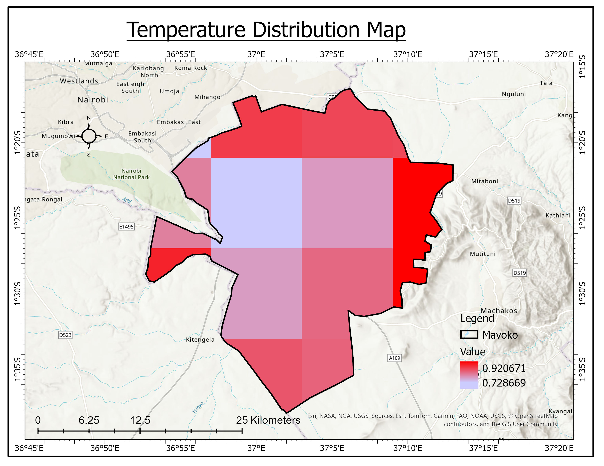
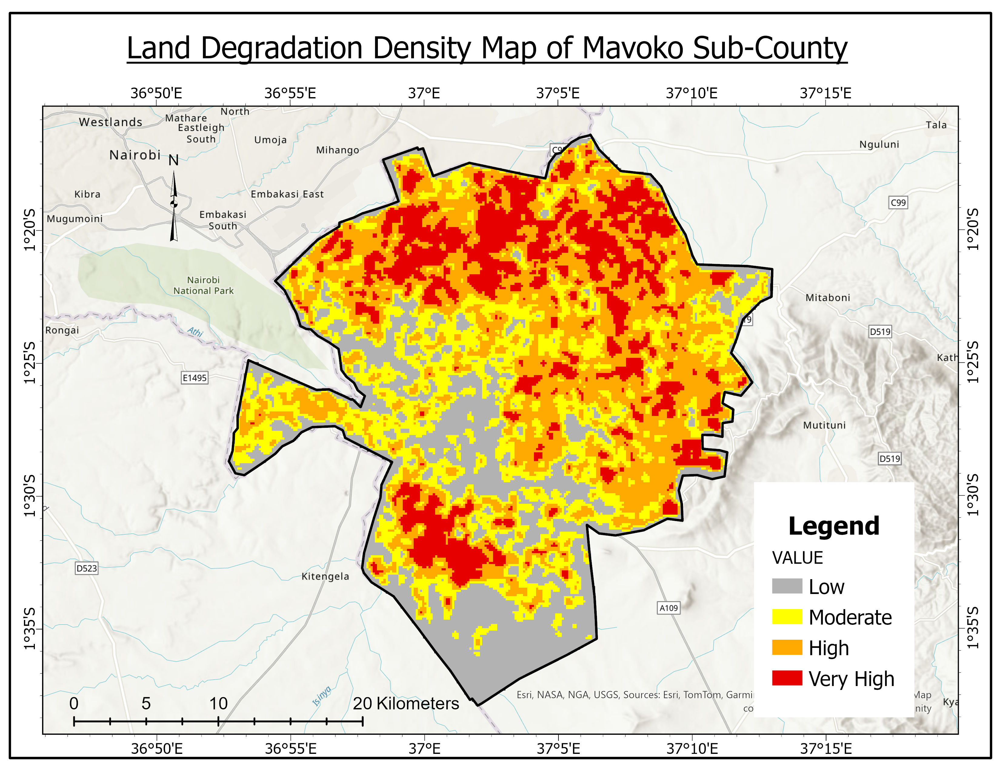
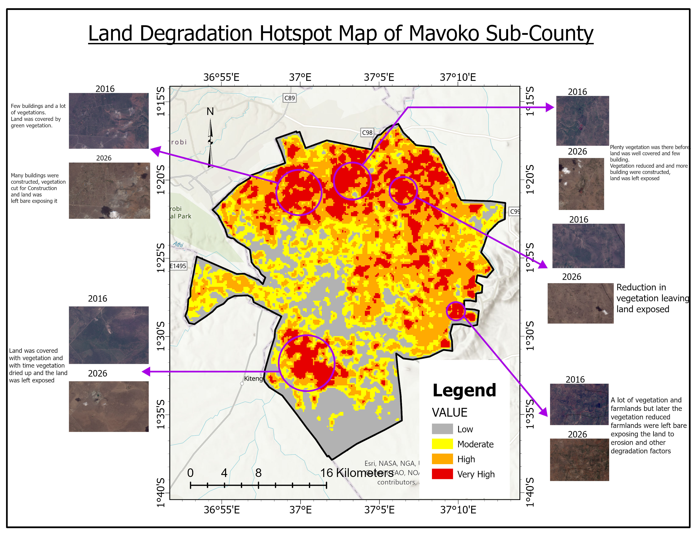

SPATIO-TEMPORAL ASSESSMENT OF LAND DEGRADATION AND CLIMATE STRESS HOTSPOTS IN MAVOKO SUB-COUNTY, MACHAKOS COUNTY, KENYA (2016-2026)
This study conducts a spatio-temporal assessment of land degradation and climate stress hotspots in Mavoko Sub-County, Machakos County, Kenya, over a 10-year period (2016-2026).
Rapid urbanization, industrial intensification, and climate variability are transforming Mavoko's landscape from dryland vegetation and grazing areas to built-up settlements, industrial zones, and transport corridors (Mombasa Road, SGR, JKIA periphery).
Key questions addressed:
- Where are land degradation hotspots located?
- Which areas require priority intervention by 2026?
Sources of Data:
Sentinel-2, CHIRPS rainfall, ERA5-Land temperature, NASA Earthdata soil, NASA SRTM 30m elevation.
Objectives
General Objective
To assess the spatial distribution of land degradation and identify hotspot areas in Mavoko Sub-County, Machakos County using remote sensing and GIS techniques.
Specific Objectives
- To analyze land use/land cover changes between 2016 and 2026 in Mavoko Sub-County, Machakos County.
- To assess environmental conditions influencing land degradation using NDVI and climate variables (rainfall and temperature).
- To model and map land degradation intensity and hotspots using weighted overlay and kernel density analysis.
Study Area

Mavoko Sub-County is located in the Eastern region of Kenya. Area: approximately 963 km². Population: 322,499 (2019 census). Semi-arid climate.
Methodology
A multi-step GIS and remote sensing workflow integrating satellite imagery, climate data, soil data, and weighted overlay analysis.
Workflow: [Data] → [Preprocess] → [LULC] → [NDVI] → [Climate+Elevation+Soil] → [Normalize] → [Weighted Overlay] → [Hotspots] → [Validation]
Satellite Data Processing
Sentinel-2 L2A (10m resolution) for 2016 and 2026. Preprocessing: Clip to Mavoko boundary, cloud masking using SCL band, normalization.
Land Use/Land Cover (LULC)
Method: Supervised classification (Random Forest)
Classes: Vegetation, Bare land, Built-up, Water
Outputs: LULC 2016, LULC 2026, LULC Change map


Key findings: Bare land expansion: 673.05 km² | Land restoration: 109.05 km² | Urban expansion: 28.05 km²
NDVI (Vegetation Health)
Formula: (NIR - Red) / (NIR + Red)
Outputs: NDVI 2016, NDVI 2026, NDVI Change map


Climate Data
Rainfall: CHIRPS (5km) → Rainfall variability index
Temperature: ERA5-Land (9km) → Temperature stress index


Soil & Elevation Data
Soil: Downloaded from NASA Earthdata (SRTM + SoilGrids)
Elevation: NASA SRTM 30m


Normalization (1-5 scale)
All layers converted to a common scale: 1 = Very low risk, 2 = Low risk, 3 = Moderate risk, 4 = High risk, 5 = Very high risk
Weighted Overlay
Formula: Degradation Index = Σ (Layerᵢ × Weightᵢ)
Weights: NDVI change (30%), LULC change (30%), Rainfall (10%), Temperature (10%), Soil (10%), Slope (10%)

Hotspot Analysis
Method: Kernel Density (Getis-Ord Gi*)
Output: Statistically significant degradation clusters

Validation
Google Earth historical imagery, OpenStreetMap comparison, High-resolution imagery spot checks.
Results
Urbanization Areas
Urbanization was concentrated in four main areas:
- Athi River - Vegetation converted to built-up (residential/industrial expansion)
- Mihang'o (near Utawala) - Rapid peri-urban growth, loss of green buffer
- Syokimau - Large-scale housing development replacing dryland vegetation
- Mlolongo - Commercial and residential densification along Mombasa Road
Bare Land Expansion Areas
Bare land increase occurred in six locations:
- Katani - Land cleared for future development, left exposed
- Kinanie - Clearing without immediate construction
- Near Lukenya Girls COE School - Surrounding land stripped of vegetation
- Ndovoini Market area - Market expansion leading to bare soil
- Kitanga Market area - Farmland soil left unprotected
- Konza area - Clearing for future development (Konza Technopolis influence)
Degradation Intensity
Very High Degradation (5 locations)
- Katani - Land cleared, left bare, no restoration
- Kinanie - Clearing without development → exposed soil
- Near Lukenya Girls COE School - Surrounding vegetation stripped, erosion active
- Ndovoini Market area - Market-related clearing, compacted bare soil
- Kitanga Market area - Commercial clearing, unprotected bare land
High Degradation (2 areas)
- Konza area - Clearing for future technopolis, currently transitional bare land
- Parts of Mlolongo - Urbanized but with residual bare patches between buildings
Moderate Degradation
- Athi River (edges) - Urban core built, fringes show transitioning bare land
- Syokimau (periphery) - New developments with incomplete vegetation recovery
Low Degradation
- Athi River riparian corridor - Persistent vegetation, water availability protects
- Isolated patches between settlements - Minimal human pressure, stable cover
Recommendations
- Immediate revegetation of very high hotspots: Katani, Kinanie, near Lukenya Girls COE School, Ndovoini Market, and Kitanga Market require immediate planting of drought-tolerant native species on all bare land parcels. No further clearing should be permitted without an approved restoration plan.
- Mandate erosion control on all cleared land: Any land clearing, whether for construction, markets, or farming must implement erosion control measures (silt fences, mulching, temporary grass cover) before approval. Bare land left exposed for more than 3 months should face penalties.
- Enforce green space bylaws in urbanizing areas: In Athi River, Syokimau, Mlolongo, and Mihang'o (Utawala), require minimum 15% vegetation cover per new development. Protect existing mature trees during construction and establish urban tree planting programs.
- Protect the Athi River riparian corridor: Declare the Athi River riparian corridor as a protected zone with no further clearing. Establish a minimum 30m buffer from the river where development is prohibited. This is Mavoko's last large stable area.
- Establish remote sensing monitoring system: Deploy a 6-month satellite monitoring system using Sentinel-2 to detect new bare land expansion early. Integrate hotspot maps into Machakos County GIS and prioritize very high hotspots for climate adaptation funding.
Conclusion
This study assessed land degradation and climate stress hotspots in Mavoko Sub-County (2016-2026) using remote sensing, GIS and weighted overlay modeling. Urban expansion concentrated in Athi River, Mihang'o, Syokimau and Mlolongo. Bareland expansion the highest degradation risk occurred in Katani, Kinanie, Lukenya Girls area, Ndovoini Market, Kitanga Market, and Konza area. Very high degradation hotspots (0.000049-0.000063) align exactly with these bareland zones confirming that clearing without restoration is the primary driver of degradation. The Athi River riparian corridor remains the only large stable area requiring immediate protection. This hotspot map provides a spatial decision-support system for targeted interventions.